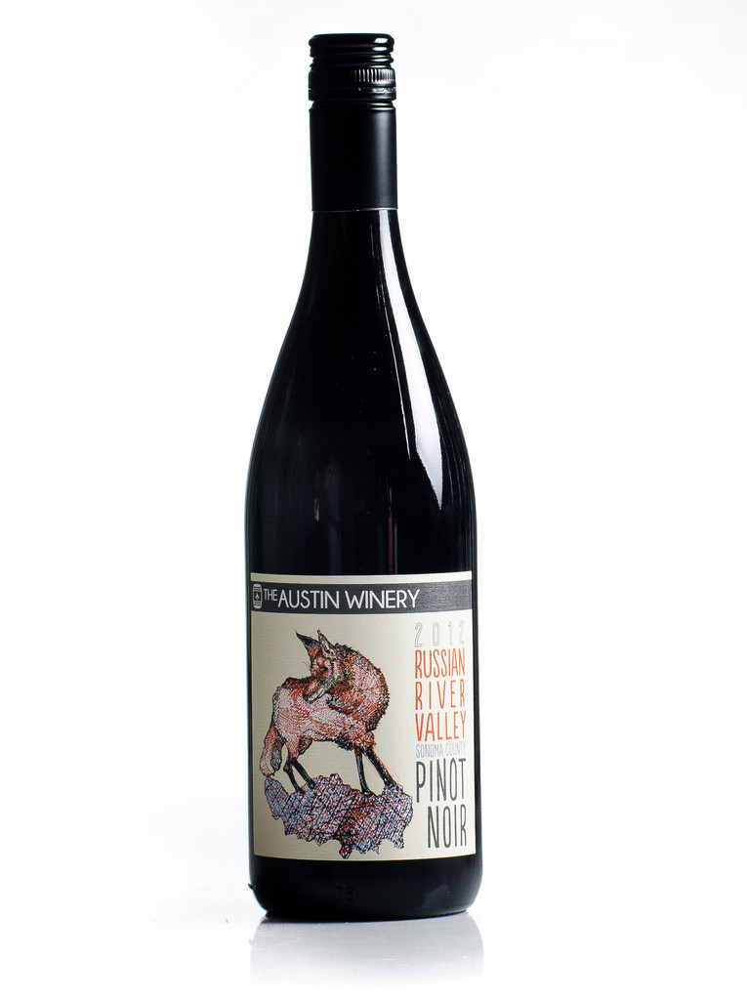

Pinot Noir:Santa Lucia 2013
Best wine 2015
Red wine is a type of wine made from dark-coloured (black) grape varieties. The actual colour of the wine can range from intense violet, typical of young wines, through to brick red for mature wines and brown for older red wines.The juice from most purple grapes is greenish-white; the red colour comes from anthocyan pigments (also called anthocyanins) present in the skin of the grape; exceptions are the relatively uncommon teinturier varieties, which produce a red colored juice. Much of the red-wine production process therefore involves extraction of colour and flavour components from the grape skin.